Fine26 UMAP
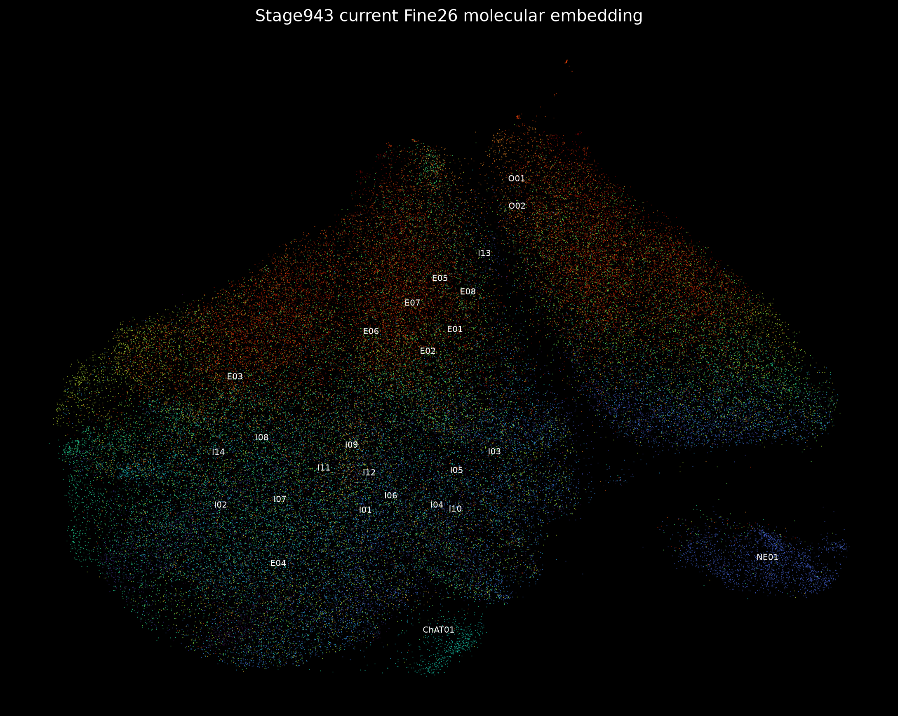
Stage943 expression · frozen Fine26 identities · Stage950–952 current integration
Fine26 remains frozen. Stage950 recomputes the current single-cell views from the Stage943 expression authority rather than re-clustering for versioning.

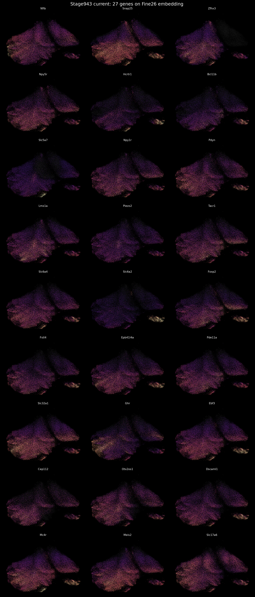

Tests transportability of the frozen 27-gene identities across S500/S530/S560.
All panels use the same Stage704 molecular embedding and frozen Fine26 identities (71,950 cells). The updated 26-color categorical palette separates adjacent Fine26 populations without redefining clusters. Raw detected spots are broad across cells; marker detection alone is not cell-type assignment. The top-5%-expression panels correct for each cell's total 27-gene count and highlight relative enrichment.
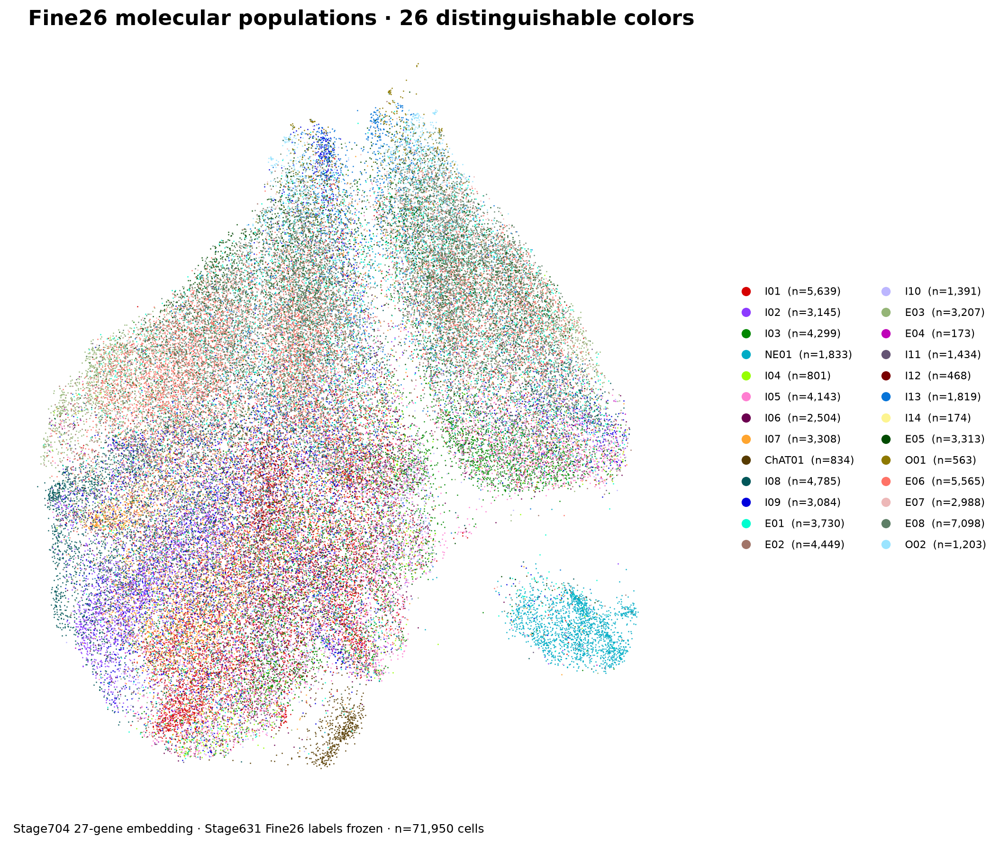
The historical 26 labels are unchanged. New color key is available as CSV.
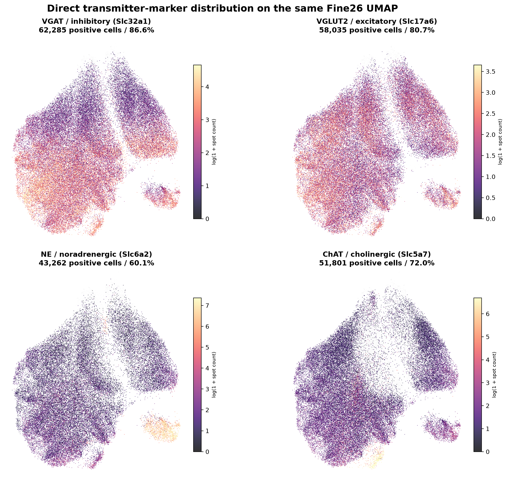
Direct gene detections, with their own numeric log-count colorbars. High detection frequency must not be interpreted as a high fraction of corresponding neuronal types.
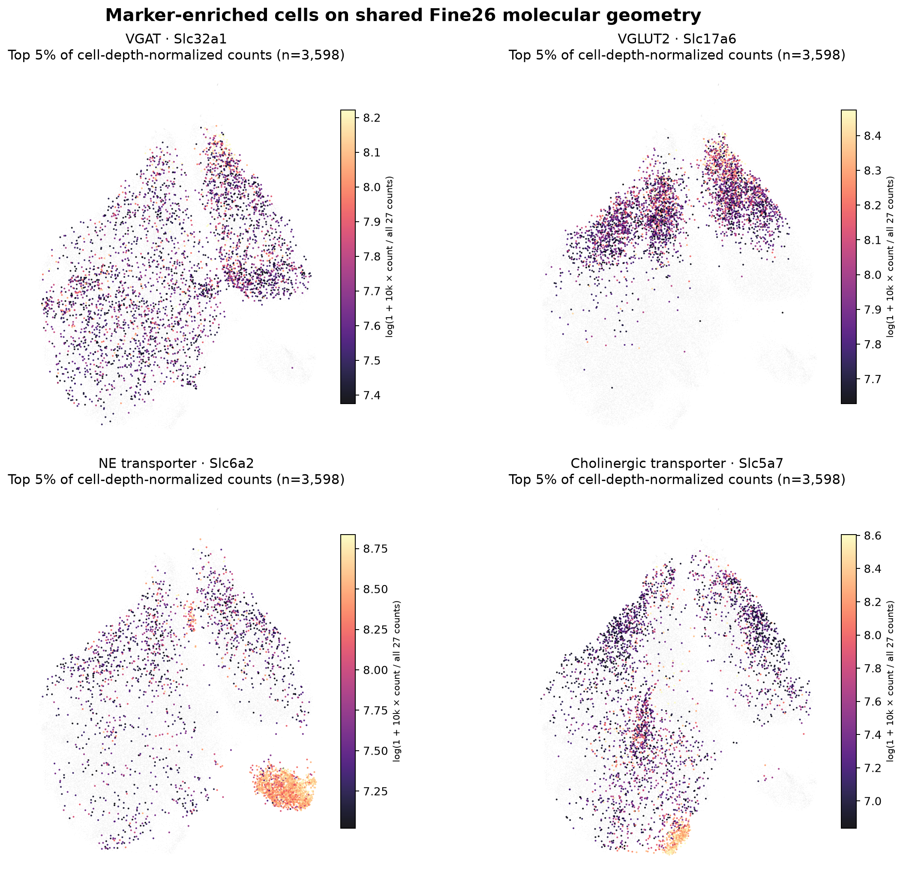
Gene-specific 95th-percentile thresholds on cell-depth-normalized counts; same UMAP axes and cell universe.
Enrichment factors are descriptive across cells, not animal-replicate inference. Underlying class-by-marker table.
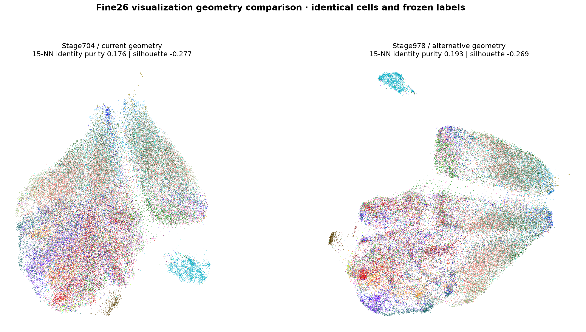
Stage978 alternative (cosine / 55 neighbors / min distance 0.09) modestly improves descriptive 15-neighbor Fine26 purity from 0.176 to 0.193, but the negative silhouettes (−0.277 / −0.269) show considerable molecular overlap. Both remain visualization candidates, not evidence for distinct new cell types.
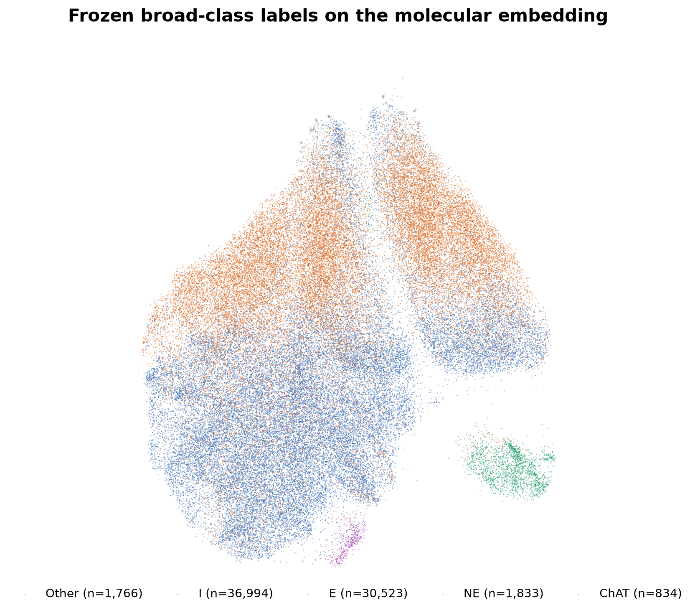
Marker-specific sensitivity test rather than an imposed E/I separation. VGAT (Slc32a1) stays at >10 count-equivalents per cell. VGLUT2 (Slc17a6) is compared at >2, >3, and >10. All numbers below come from 71,950 real cells in S500/S530/S560, from the same single specimen, keeping original Fine26 and broad labels frozen. Current post-correction Route A counts are numerical, not independently validated physical puncta counts; hence thresholds refer to corrected count-equivalents.
| VGLUT2 count cutoff | VGLUT2+ within broad E | VGLUT2+ within broad I | All cells: VGAT+/VGLUT2+ co-positive | All cells: neither |
|---|---|---|---|---|
| >2 | 62.8% | 61.6% | 27.2% | 28.6% |
| >3 | 52.4% | 51.3% | 23.7% | 35.1% |
| Historical comparator >10 | 14.8% | 15.6% | 8.5% | 55.8% |
Key interpretation: dropping VGLUT2 to 2–3 raises the detectable cell fraction substantially, but VGLUT2 by itself does not distinguish broad excitatory from inhibitory cells (E/I AUC 0.504). VGAT is far more discriminating (inverse VGAT AUC 0.844). If VGAT-positive cells are assigned first, VGLUT2>3 and VGAT≤10 picks out 19,448 neuronal cells, 72.9% of which have frozen broad-E labels; this is a VGAT-priority gating rule, not evidence of absent dual-marker detection. The observed co-positive cells remain counted (23.0% of the E/I universe at >3). Ratios and broad labels are partly non-independent, so no validation of neurotransmitter release is claimed.

Positive, exclusive, double-positive, and neither as a function of VGLUT2 count cutoff. Complete data table

Same VGAT cutoff of 10, VGLUT2 2/3/10; section-specific denominators displayed.
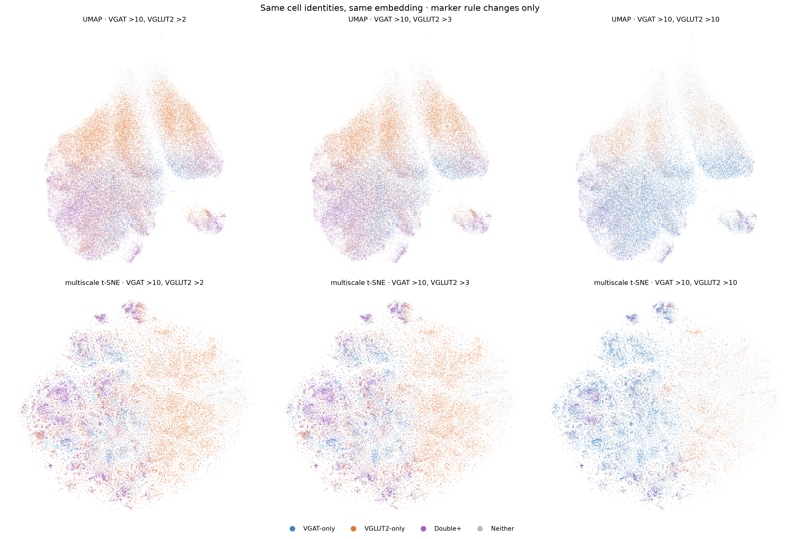
Identical 71,950 cells, fixed embeddings; nothing reclustered, so shape cannot be influenced by threshold choice.

Different sections show different detection levels; none show a strong E-specific Slc17a6 signal at 2/3. Historic H5AD versus current correction.

VGLUT-only AUC 0.504; VGAT alone 0.844; VGLUT/VGAT log-ratio 0.817. Combination primarily benefits from VGAT. VGAT-first gating coverage and precision.
Publication defensibility: use Slc32a1>10 / Slc17a6>3 as a transparently marked lower-sensitivity-threshold exploratory overlay, retain >10/>10 comparator, raw detection histograms, and separate dual-positive fractions. Require probe-specific negative-control and true punctum/background inspection before calling Slc17a6>3 an experimentally validated positive threshold. Cross-sections are technical/spatial consistency checks, not animal-level replication. Method context: Wang et al. Cell 2021; Wang et al. eLife 2023.
The data do not yet establish two clean E/I marker groups. Nonzero detection badly overestimates positivity. The Yuhan Wang eLife 2023 >10-spots/cell reference shows Slc17a6 positive in 14.8% of frozen excitatory and 15.7% of frozen inhibitory cells, whereas Slc32a1 is enriched in inhibitory cells. A separate S500→S530 threshold screen is exploratory; S560 is untouched held-out evaluation. Raising both cutoffs to make co-positive cells disappear can turn real E cells into "neither", so we explicitly show coverage and false-negative tradeoffs. S500/S530/S560 are different sections of one animal, not biological replicates.
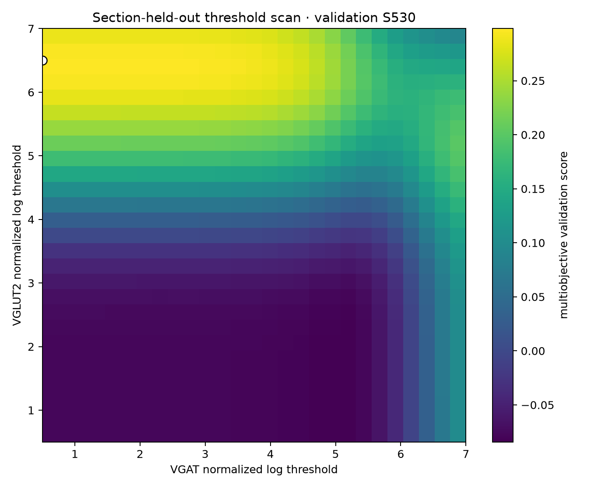
Validation-selected normalized thresholds, not ground truth. All tested values and objectives
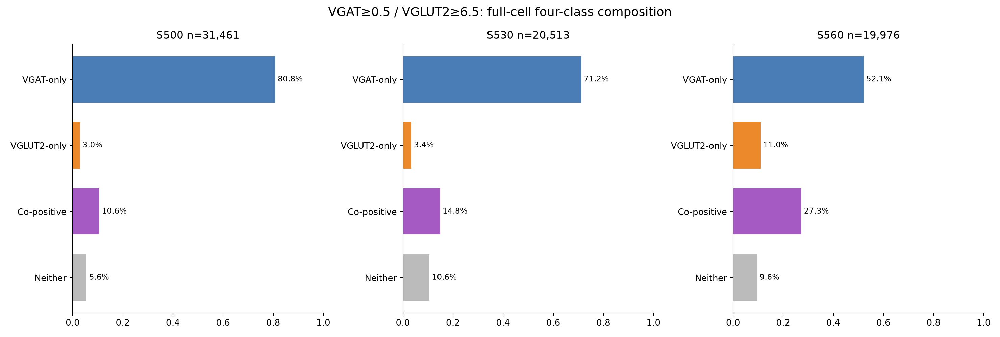
VGAT-only, VGLUT2-only, double-positive, and neither, with section-by-class source table
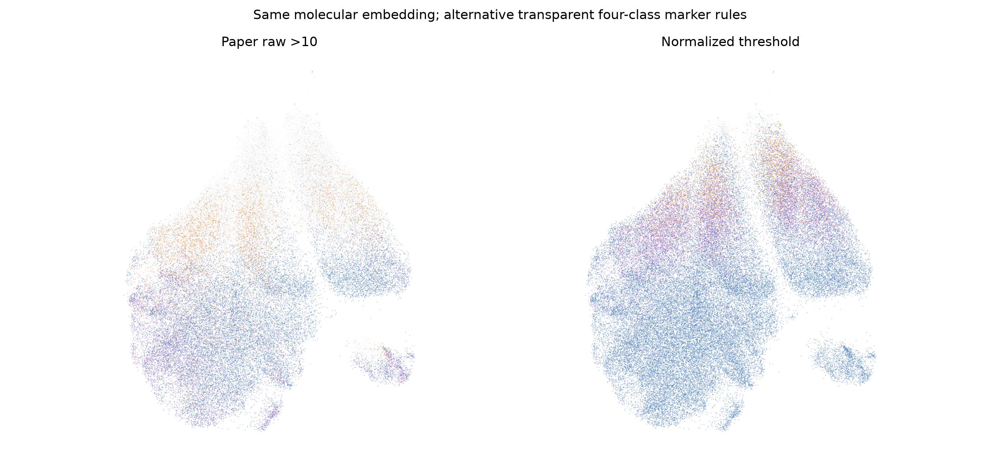
Co-positive fractions must be interpreted alongside the number of unassigned cells.
Source audit: historical H5AD versus current corrected Route A yields near-identical class-specific Slc17a6 positivity and cell-level Pearson correlations around 0.9, so this anomaly is not introduced solely by the latest correction. Inspect the cross-version comparison. A better t-SNE cannot correct inadequate marker specificity.
A real multiscale t-SNE was fitted to all 71,950 cells using the same current 27-gene PCA15 input as UMAP (PCA initialization, perplexities 30 and 300, high learning rate). On an independent fixed 4,000-cell evaluation subset, local Fine26 purity improved from 0.182 (Stage704 UMAP) to 0.221 (new t-SNE), while high-dimensional 15-neighbor retention rose from 0.118 to 0.212; broad-class purity remained around 0.72. These are descriptive structure checks, not proof of new clusters.
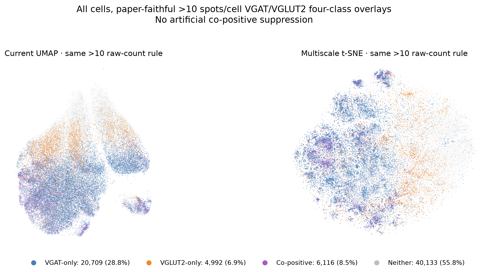
Same full 71,950 cells; Yuhan-style raw >10 spots/cell calls: VGAT-only 20,709; VGLUT2-only 4,992; co-positive 6,116 (8.5%); neither 40,133 (55.8%). A small double-positive fraction does not demonstrate perfect exclusion when most cells remain below both thresholds. Counts
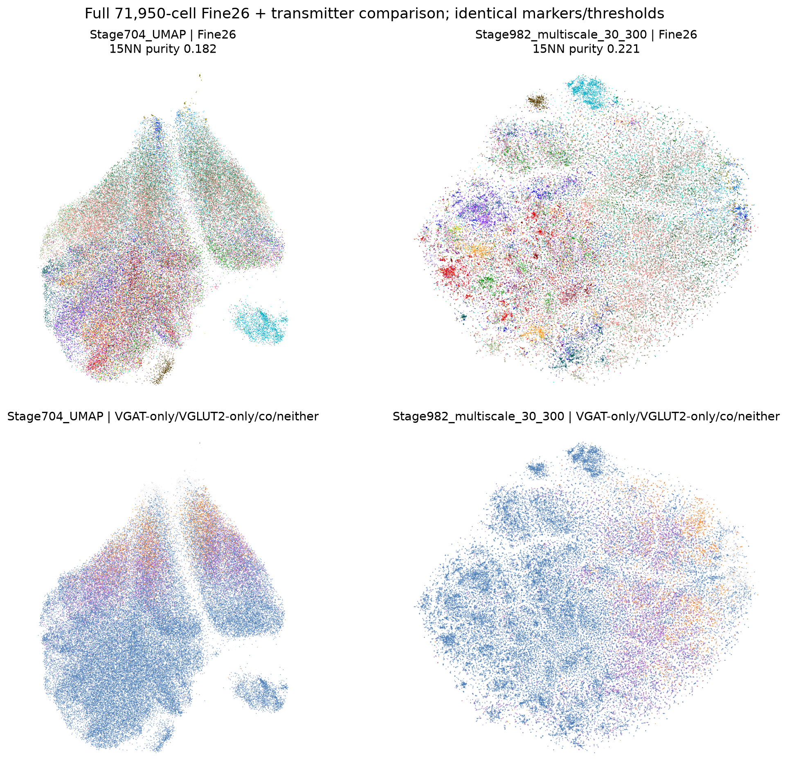
Upper row: same frozen 26 identities. Lower row: independent exploratory normalized cutoff sensitivity, not the primary >10 raw-count classification. Full-dataset comparison metrics
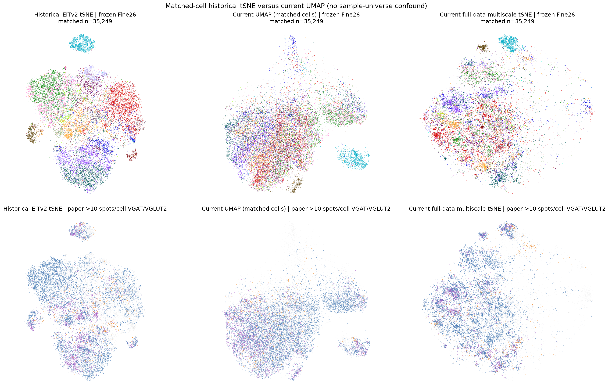
35,249 historical cells matched by ROI identity. Fine26 15-NN purity: historical t-SNE 0.543; current UMAP 0.253; current multiscale t-SNE 0.347. Crucially, high-D neighbor retention favors current t-SNE (0.253) over historical t-SNE (0.095), so the visually separated historical islands can distort present-day molecular geometry. Matched-sample audit
Method anchors: Kobak & Berens, Nature Communications 2019 for PCA-init/multiscale t-SNE; Yuhan Wang et al., eLife 2023 for EASI-FISH cell-type mapping and marker-coexpression design. The older Stage127 t-SNE used an earlier EITv2 cell-classification stage; it is not an independent validation set.
One high-information local field is shown in each section, linking tissue position, Fine26 identity and the 27-gene single-cell state.
These spatial panels use the already-flipped Stage631 physical coordinates (no double-flip). Fine26/Broad maps show selected medial periLC cells, not full-section class coverage. Local multiplex scatter panels below have also been regenerated from source coordinates.
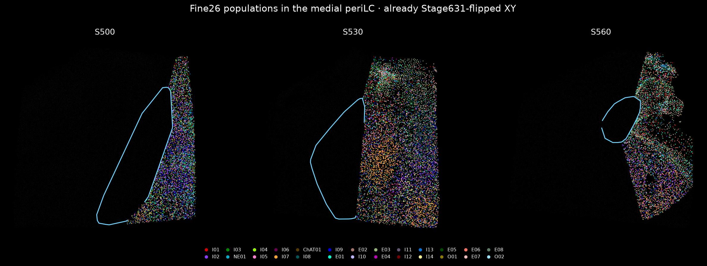
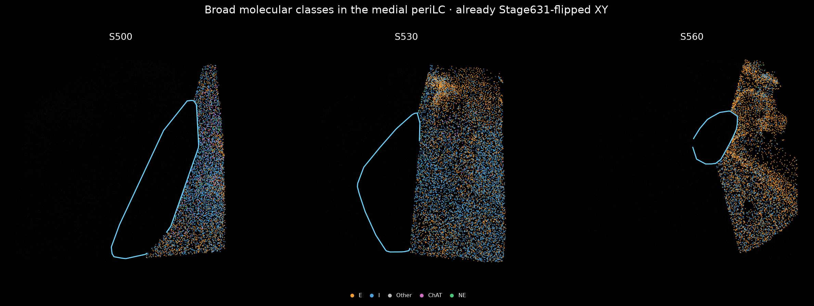


Stage974 displays Stage951 true segmentation bodies using preflipped Stage631 coordinates without an extra flip, verified against matched cell ROI IDs for all three sections.
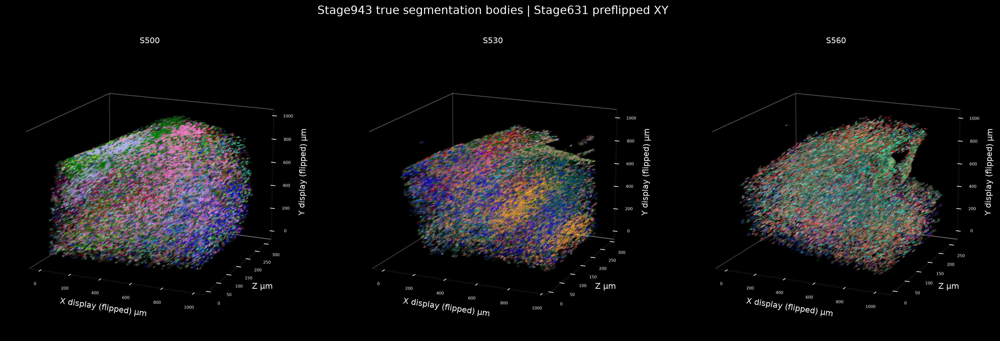
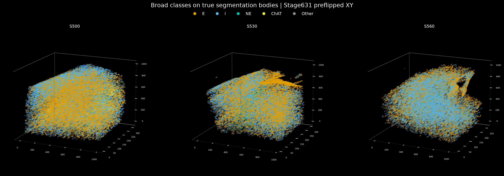
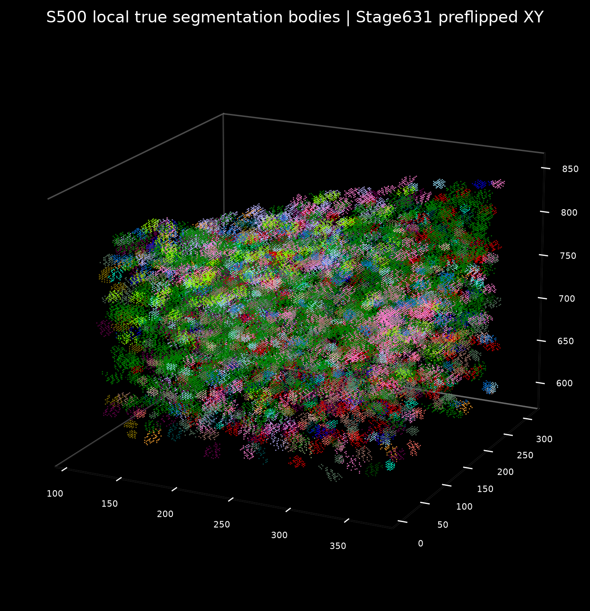
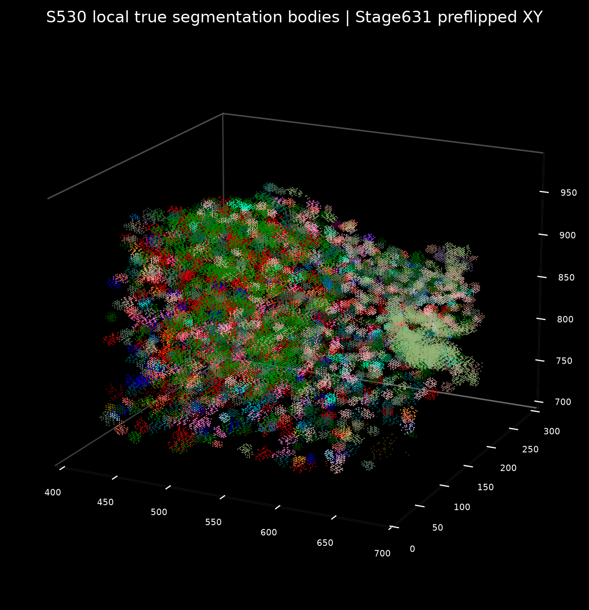
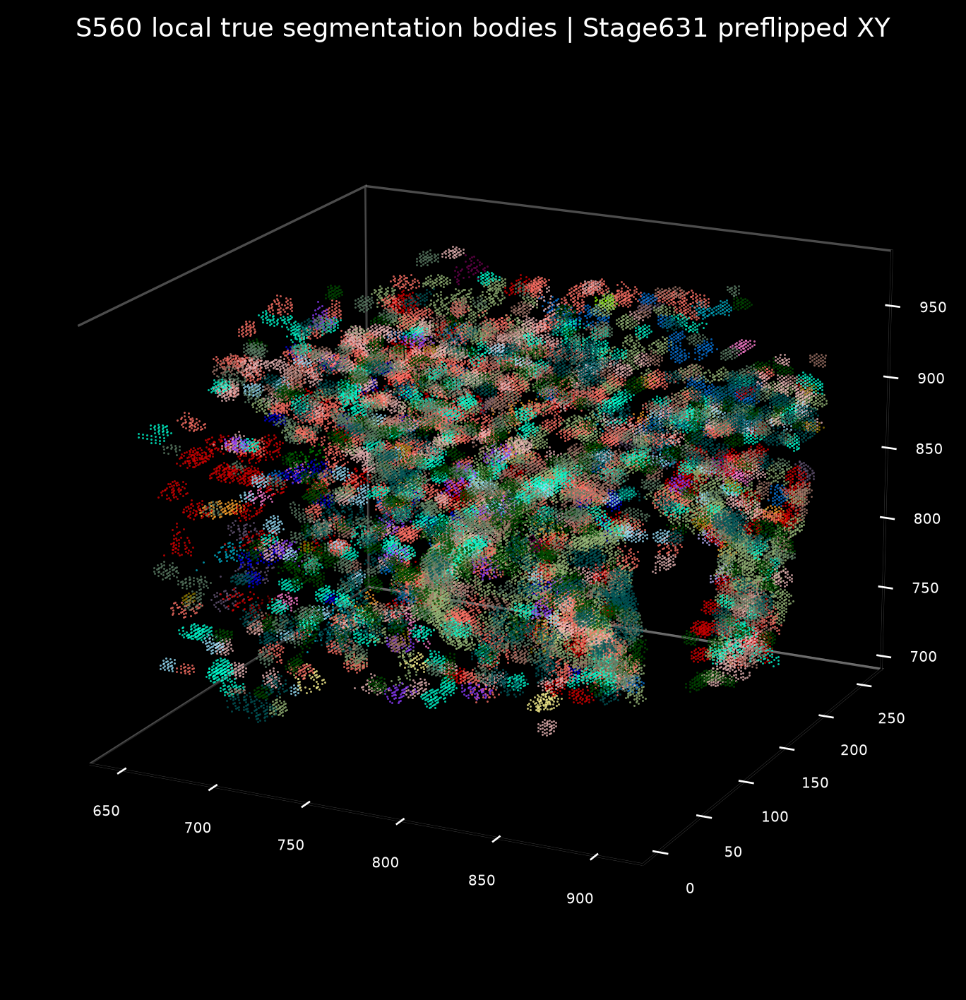
New Stage983: 27 seconds, 25 fps, 675 frames, continuous 360° camera orbit. Start with complete coronal view, smoothly zoom into the 3D cell bodies, rotate all the way around, zoom back out and hold. S500, S530 and S560 are shown simultaneously. The Stage631 physical X/Y convention and Fine26 26-color key are unchanged; 3D bodies are sampled points from actual downseg masks rather than cell centers.
Inspect seven camera-angle quality-control frames, or compare against the older 12-second video. Full 360° refers to the physical camera orbit, not rotation of the fixed source images.
Stage952 connects the marker-guided region10 atlas to frozen Fine26 identity, morphology and residual within-cell-type spatial modulation.


Interpretation: spatial domain and molecular identity are complementary, not redundant. Region labels are section-local and are never assumed to be homologous across sections.
External Allen / MapMyCells correspondence and functional latent-state prediction remain downstream analyses. They are not used to define the current Fine26 identities or region10 boundaries.